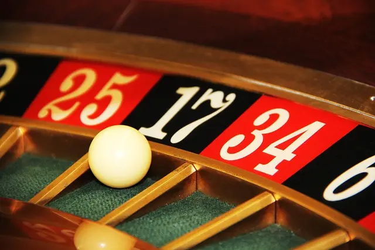

Was ist Roulette?

Roulette ist ein beliebtes Glücksspiel, das in Casinos auf der ganzen Welt gespielt wird. Mann spielt es auf einem Rad mit nummerierten Fächern und einer Kugel , die durch einem Croupier gedreht werden muss.
Die Spieler setzen auf den Ausgang des Spiels, indem sie ihre Chips auf dem Roulette-Tisch platzieren, der in verschiedene Felder unterteilt ist, die die verschiedenen Wettoptionen darstellen.
Es gibt verschiedene Arten von Wetten, die man platzieren kann, wie z.B. Wetten auf eine bestimmte Zahl, eine Gruppe von Zahlen oder die Farbe der Zahl.
Nachdem die Kugel in das sich drehende Rad geworfen wurde. Bleibt sie irgendwann in einem der nummerierten Fächer liegen und bestimmt damit den Gewinner der Runde. Es ist ein Spiel, bei dem Glück eine große Rolle spielt. Aber es gibt auch Strategien und Systeme, die Spieler anwenden können, um ihre Gewinnchancen zu erhöhen.
Kann man Roulette strategisch spielen?
Das Spiel kann man natürlich auch auf eine strategisch Art spielen. Obwohl es ein Glücksspiel ist, gibt es Strategien und Systeme, die Spieler anwenden können. Um ihre Gewinnchancen zu erhöhen oder das Risiko von Verlusten zu minimieren. Einige der beliebtesten Strategien sind:
- Die Martingale-Strategie: Bei dieser Strategie wird nach jedem Verlust der Einsatz verdoppelt, bis man einen Gewinn erzielt . Dies soll sicherstellen, dass der Spieler auf lange Sicht einen Gewinn erzielt. Allerdings kann diese Strategie riskant sein, da sie hohe Einsätze erfordert und die Einsätze schnell sehr hoch werden können.
- Die Fibonacci-Strategie: Diese Strategie basiert auf der Fibonacci-Folge, einer Zahlenfolge, bei der jeder Wert die Summe der beiden vorherigen Werte ist. Der Einsatz wird entsprechend der Fibonacci-Folge erhöht oder verringert. Dies ist aber abhängig von dem Gewinn oder Verlust.
- Die D’Alembert-Strategie: Diese Strategie basiert auf der Annahme, dass sich Verluste und Gewinne im Laufe des Spiels ausgleichen werden. Nach jedem Verlust wird der Einsatz um eine Einheit erhöht, nach jedem Gewinn um eine Einheit verringert.
- Die Paroli-Strategie: Diese Strategie wird auch als umgekehrte Martingale-Strategie bezeichnet und basiert darauf, dass der Spieler seine Gewinne erhöht, anstatt seine Einsätze zu verdoppeln. Nach jedem Gewinn wird der Einsatz um eine Einheit erhöht, während bei einem Verlust der Einsatz auf den ursprünglichen Wert zurückgesetzt wird.
Es ist jedoch wichtig zu beachten, dass keine Strategie eine Gewinngarantie bietet. Roulette bleibt ein Glücksspiel und das Ergebnis hängt von zufälligen Ereignissen ab. Strategien können jedoch dazu beitragen, das Risiko von Verlusten zu minimieren und die Gewinnchancen zu erhöhen.
Welche Arten von Roulette gibt es?
Es gibt verschiedene Arten von Roulette, die man in Casinos auf der ganzen Welt spielen kann. Die drei bekanntesten Varianten sind:
- Europäisches Roulette: Diese Variante ist die am häufigsten gespielte Form des Roulettes und hat ein Rad mit nummerierten Fächern von 0 bis 36. Der Hausvorteil beträgt bei dieser Variante 2,7%, da es nur eine Null gibt.
- Amerikanisches Roulette: Diese Variante hat ein Rad mit 38 nummerierten Fächern von 0 bis 36 und einem zusätzlichen Doppel-Null-Feld (00). Der Hausvorteil bei dieser Variante beträgt 5,26%, was höher ist als bei der europäischen Variante.
- Französisches Roulette: Diese Variante ähnelt der europäischen Version, aber es gibt einige Unterschiede im Layout des Tisches. Zum Beispiel gibt es beim französischen Roulette die „En Prison“ oder „La Partage“ Regel, die es dem Spieler ermöglicht, seine Wette zu speichern. Oder sogar einen Teil seines Einsatzes zurückzuerhalten, wenn die Kugel auf der Null landet. Der Hausvorteil bei dieser Variante beträgt ebenfalls 2,7%.
- Abgesehen von diesen drei Hauptvarianten gibt es auch andere spezielle Formen von dem beliebten Glücksspiel. Es gibt zum Beispiel Multi-Wheel Roulette, Mini Roulette, Pinball Roulette und mehr.
Wo kann man Roulette überall spielen?
Roulette kann man in vielen landbasierten Casinos auf der ganzen Welt spielen. Die bekanntesten Casinos, die das Glücksspiel anbieten, befinden sich in Städten wie Las Vegas, Monte Carlo, Macau und Atlantic City.
In diesen Casinos gibt es oft verschiedene Varianten von dem Spiel, einschließlich europäischem, amerikanischem und französischem Roulette.
Darüber hinaus kann man das spiel auch online in zahlreichen Online-Casinos spielen. Viele Online-Casinos bieten eine Vielzahl von Roulette-Varianten an, die den Spielern eine breite Auswahl an Spielen und Wettoptionen bieten.
Online-Roulette kann man auf verschiedenen Plattformen spielen, einschließlich Desktop-Computern, Tablets und Mobilgeräten.
Es ist jedoch wichtig zu beachten, dass das Spielen von Online-Roulette in einigen Ländern illegal sein kann oder besonderen Regulierungen unterliegt. Es ist ratsam, die örtlichen Gesetze zu überprüfen, bevor man Online-Roulette spielt.